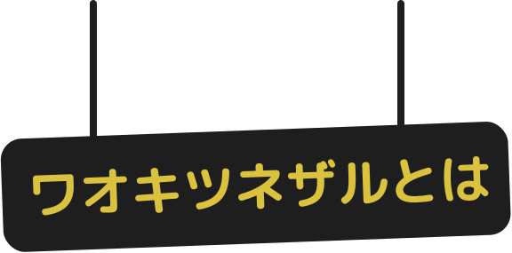

キツネザルは、アフリカ・マダガスカル島にしか生息していないとても特別なサルの仲間です。その中でも「ワオキツネザル」は、白と黒のしま模様のしっぽと、キリッとした大きな目が特徴。名前の“ワオ”は、尾に白と黒の輪状の模様が入り、和名の由来になっています。社会性が高く、家族単位で暮らす習性を持っており、動きも表情もと

ワオキツネザルの分布・生態について
例：ワオキツネザル（輪尾狐猿、Lemur
catta）は、霊長目キツネザル科に分類される霊長類。本種のみでワオキツネザル属を構成する。
分布
マダガスカル南部（ムルンダヴァからフォール・ドーファンにかけて、アンドリンギトラ山地）
キツネザルとは
絶滅危惧種
ワオキツネザルは、国際自然保護連合（IUCN）によって「絶滅危惧種」に指定されている貴重な動物です。主な原因は、森林伐採などによる生息地の減少と、ペット目的での違法な捕獲です。マダガスカルでは野生個体数が急激に減っており、地球規模での保護が必要とされています。そんな中、日本の動物園では繁殖や啓発活動に取り組みながら、保護を続けています。